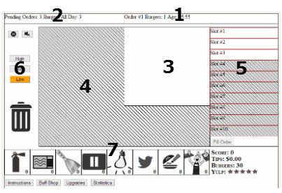

Name:
Description:
Price:
Your Money: $
Uh-oh! It looks like you've run out of burgers!
Not to worry, you have two options; use your tips to purchase another shipment of patties immediately, or close up shop and wait until tomorrow.
Another shipment of patties costs $. If you have that much available, use the button below to purchase.


Welcome to Patty Wagon, a burger truck simulation game.
Let's start by showing you around the truck.
|  |
|
The basic concept of the game is simple; cook burgers for your customers.
Orders will come in at random intervals from customers wanting a certain number of burgers. The orders are placed in a queue, and you have to work on them one at a time. Hurry up though, you don't want your customer getting impatient and leaving!
Details on orders that have come in are displayed in the Current Order and Pending Order windows at the top of your screen. Pay attention to the number of burgers a customer wants. Partial orders are not allowed! Give the customer everything at once.
To start cooking a burger, click anywhere on the active griddle area. This will take a burger from your inventory and drop it on the grill. Sizzle! That noise means the patty is cooking! Your aim is to cook each side of the burger as close to 100% as you can. Over 100% is considered burnt! Yuck! Once your patty is as close to 100% on each side as you can get it, drag it over to the prep table.
When you drop a burger on to the prep table, it will blink with either a thumbs up, or thumbs down, depending on how closely you've cooked the burger to 100% on each side. Each burger on the prep table will occupy one of the available 'slots', and show a green or red bar, again representing a good or bad cook job.
Cooked burgers on the prep table start out nice and hot, but won't stay that way for long! Serve them up to a customer quickly, or they will go cold and have to be thrown out. When you have enough burgers on your prep table to satisfy the current order, click the Fill Order button.
Your score is calculated based on several factors; the number of burgers in the order, how well each burger is cooked, the quality of beef used in your burgers, how hot the burgers are when you serve them, and how quickly the order is filled. Complicated, isn't it? Customers may also tip on an order if you have done a great job! Use these tips to purchase buffs and upgrades to help you later on in the game.
It may be useful to know that when a burger is scored for how well it is cooked, the side with the worst doneness is used. Cooking a burger 100% on one side, but 20% on the other, results in a horrible hamburger! Always try to cook them evenly!
Occasionally one of your customers will decide to review your food truck on Yulp, a fictional review site. Positive reviews here can help draw more customers to your truck, while poor ones will drive customers away. You never know which customer will leave a review, so make sure all of your orders are perfect!
To help you out in the game, there is a system of buffs and upgrades that can be purchased with your tip money. Open up the buff or upgrade store by using the buttons below the buff icons. Don't worry, the game will automatically pause for you!
Buffs are one time use, temporary upgrades for your burger operation. One time use buffs, Fire Extinguisher, Microwave, Scraper, and Pause activate as soon as you click the corresponding button. The other four buffs, Heatlamp Supercharge, Twitter Post, Special Sauce, and Line Cook, last for a limited time. A small red timer bar will appear on the buff button once activated to indicate the time remaining. You can have more than one timed buff active at once, so mix and match for best results!
A detailed description of each buff is below.
|
Fire Extinguisher: Accidentally overcooking a burger may result in a fire breaking out on your griddle! Fire will start small, but gradually spread to engulf the entire griddle, destroying any burgers it runs in to. You can use this fire extinguisher to instantly put out any fires. |
|
Microwave: A microwave? In a food truck? Use this if you want to cut some corners, and get an order out fast. This buff fills the current order by taking burgers directly from your stash. The resulting burgers aren't cooked that well, but they'll do in a pinch! |
|
Scraper: Sometimes instead of causing a fire, overcooking a burger may result in burning the patty to the griddle! This results in a dead spot on the grill that can no longer be used for cooking. This dead spot will gradually shrink and disappear, or you can use a scraper to remove it instantly! |
|
Pause: Your griddle is set up so it can never be turned off. Any patties on it will just keep cooking until they burn... unless you use the Pause buff! Using this buff puts your griddle into an 'off' state, which means patties on it will no longer cook. Great for keeping a griddle full of perfectly cooked patties ready to go when your prep table fills up! The griddle is turned back on by clicking one of the temperature controls. |
|
Heatlamp Supercharge: This buff makes any burgers you put onto the prep table a longer lifespan before getting cold. |
|
Twitter Post: How do food trucks let people know where they are? Often with Twitter! Make a twitter post and attract more customers! |
|
Special Sauce: A little dollop of this special sauce makes any undercooked burger taste absolutely perfect! Unfortunately it can't mask the taste of a burnt burger. |
|
Line Cook: Things can get busy on the truck, with orders flying in, and all these patties to cook! Make your life easier by hiring an assistant! This timed buff gives you a helper that will automatically flip patties and move them to the prep table once they are cooked perfectly. All you have to do is put out the orders, and count the money! |
Upgrades are permanent improvements to your food truck operation. Once purchased, they cannot be taken away and will never expire. Each upgrade has three levels, and you start out at zero.
Below is a detailed description of each upgrade.
|
Beef Quality: When you first start the game, you start out with rather poor quality beef. It makes patties that fall apart easily, is full of gristle, and doesn't taste so great. This upgrade will give your patties more flips on the griddle before they break apart, and make a better tasting burger (which results in a higher score). |
|
Griddle Size: Not enough room on your griddle to cook enough patties? This upgrade will increase your useable cook area, letting you fit more on at one time. |
|
Griddle Heat: This upgrade modifies the range of heat your griddle can produce; the low setting will cook slower, and the high setting will cook faster! |
|
Truck Exterior: Attract more customers to your truck with a fancy new paintjob! This upgrade will permanently increase the flow of orders coming in. |
|
Prep Table Size: Upgrade your prep table to hold more cooked burgers! |
|
Buff Duration: Some of the buffs you can use in the game last for a set duration. This upgrade will increase the time they remain active! Applies to the Heatlamp Supercharge, Twitter Post, Special Sauce, and Line Cook buffs. |
|
Patties Per Day: When the game starts, you only get 30 patties a day. Upgrade this to make a better deal with your supplier, permanently increasing your daily patty supply! |
Thanks to everyone who helped test this game during it's development. It must have been frustrating having bugs get re-introduced over and over again as I reworked the code! Also to anyone who contributed sound effects or ideas. Much appreciated.
Thanks to hamburgers for being so delicious.
Libraries used: jQuery, jQueryUI, jQueryUI Touch Punch, Sound Manager 2, freesfx.co.uk
This game was designed and written by fdask over the course of a month in Fall 2013.